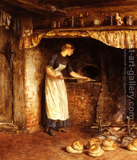

Bava Kamma 96 - A Thief Keeps Stolen Bread Through Passover

If one sold an animal and it grew old and weak while in the robber's possession, he pays its cash value as at the time of the robbery.
If one stole a coin and it cracked, or fruits and they rotted, or wine and it soured - he pays the value as at the time of robbery.
If one stole Chametz (leavened food) and it remain in the robber's possession throughout Passover - which rendered it prohibited for all benefit - the robber can say to the original owner, "Behold, what is yours I right here before you, take it back as is."